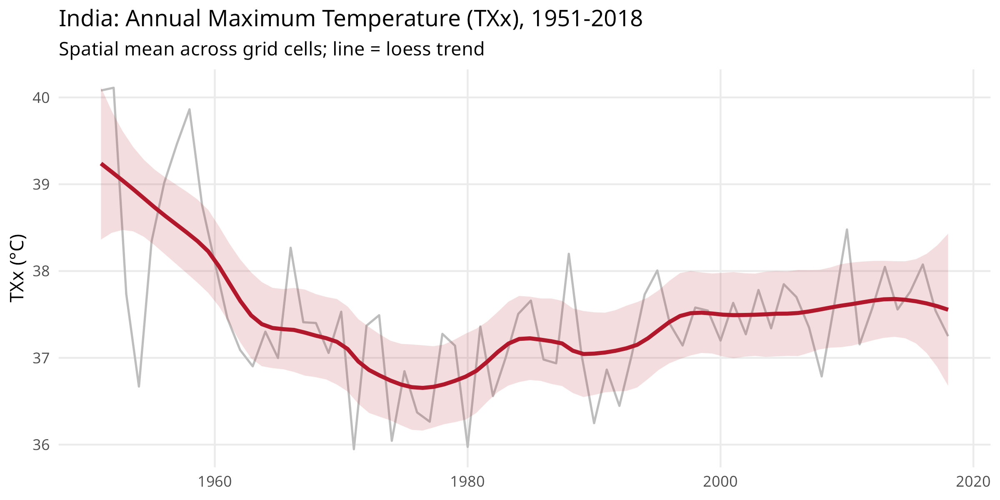
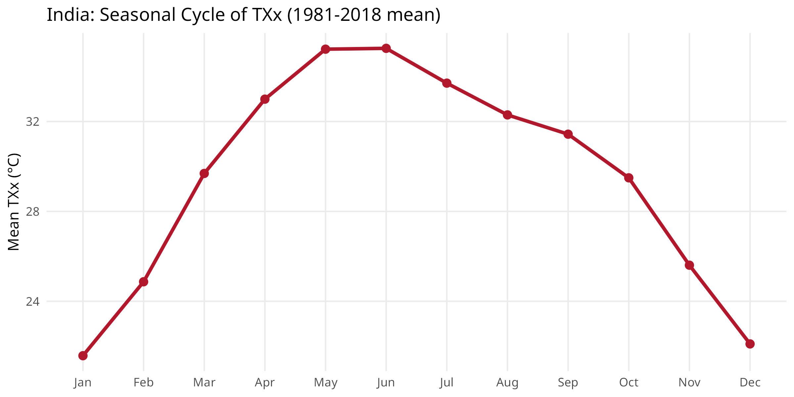
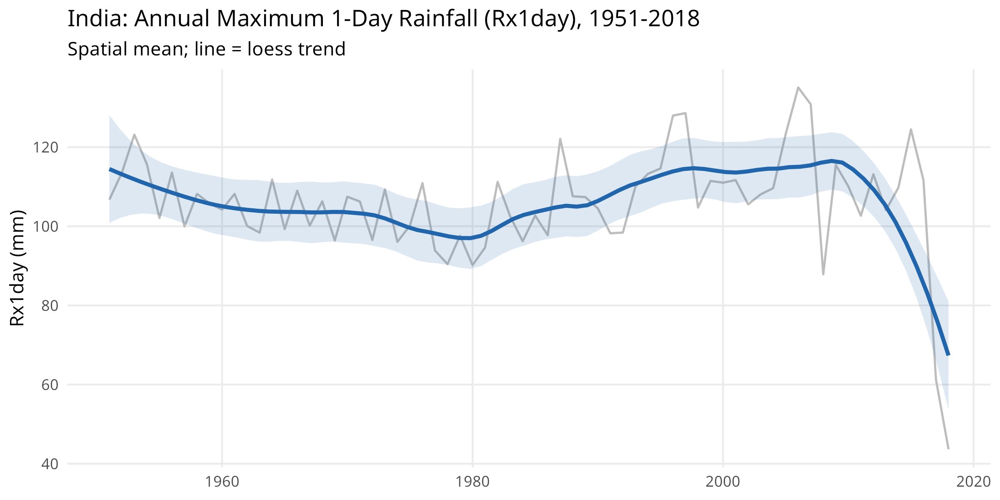
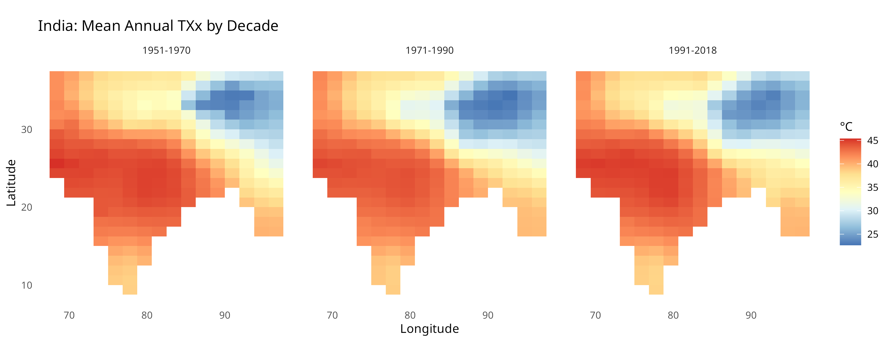

HadEX3 Climate Extremes: India
Source:vignettes/hadex3-climate-extremes.Rmd
hadex3-climate-extremes.RmdThe HadEX3 dataset from the Met Office Hadley Centre provides global gridded climate extremes based on 27 ETCCDI indices, at 1.25 x 1.875 degree resolution over 1901-2018.
Available indices and their descriptions:
list_hadex3_indices() |>
select(index, category, description, unit, annual, monthly) |>
head(12)
# index category description unit
# 1 TXx Temperature Max of daily max temp (hottest day) °C
# 2 TXn Temperature Min of daily max temp (coldest day) °C
# 3 TNx Temperature Max of daily min temp (warmest night) °C
# 4 TNn Temperature Min of daily min temp (coldest night) °C
# 5 TX90p Temperature percentile % days with TX > 90th percentile %
# 6 TX10p Temperature percentile % days with TX < 10th percentile %
# 7 TN90p Temperature percentile % days with TN > 90th percentile %
# 8 TN10p Temperature percentile % days with TN < 10th percentile %
# 9 TR Temperature threshold Tropical nights (TN > 20°C) days
# 10 SU Temperature threshold Summer days (TX > 25°C) days
# 11 FD Temperature threshold Frost days (TN < 0°C) days
# 12 ID Temperature threshold Ice days (TX < 0°C) days
# annual monthly
# 1 TRUE TRUE
# 2 TRUE TRUE
# 3 TRUE TRUE
# 4 TRUE TRUE
# 5 TRUE TRUE
# 6 TRUE TRUE
# 7 TRUE TRUE
# 8 TRUE TRUE
# 9 TRUE TRUE
# 10 TRUE TRUE
# 11 TRUE TRUE
# 12 TRUE TRUEDownload
# Annual TXx (max of daily max temp) for India
india_txx <- hadex3_bbox(
index = "TXx",
start_year = 1951, end_year = 2018,
north = 37, south = 6, east = 98, west = 68,
frequency = "annual"
)
# Annual Rx1day (max 1-day rainfall) for India
india_rx1day <- hadex3_bbox(
index = "Rx1day",
start_year = 1951, end_year = 2018,
north = 37, south = 6, east = 98, west = 68,
frequency = "annual"
)
# Monthly TXx for seasonal analysis
india_txx_mon <- hadex3_bbox(
index = "TXx",
start_year = 1981, end_year = 2018,
north = 37, south = 6, east = 98, west = 68,
frequency = "monthly"
)
saved <- readRDS(system.file("extdata", "india_hadex3.rds", package = "varunayan"))
india_txx <- saved$TXx_annual
india_rx1day <- saved$Rx1day_annual
india_txx_mon <- saved$TXx_monthlyAnnual Temperature Extremes Trend
Annual TXx (hottest day) for India: spatial mean across grid cells, with a 10-year running mean trend.
txx_annual <- india_txx |>
group_by(year) |>
summarise(mean_txx = mean(value, na.rm = TRUE), .groups = "drop")
ggplot(txx_annual, aes(x = year, y = mean_txx)) +
geom_line(color = "#BDBDBD", linewidth = 0.6) +
geom_smooth(
method = "loess", span = 0.3, se = TRUE,
color = "#B2182B", fill = "#B2182B", alpha = 0.15, linewidth = 1.1
) +
labs(
x = NULL, y = "TXx (\u00b0C)",
title = "India: Annual Maximum Temperature (TXx), 1951-2018",
subtitle = "Spatial mean across grid cells; line = loess trend"
) +
theme_minimal(base_size = 11) +
theme(panel.grid.minor = element_blank())
Seasonal Patterns from Monthly Data
Monthly TXx averaged over 1981-2018 shows the typical pre-monsoon peak in May-June and the cooler post-monsoon period.
seasonal <- india_txx_mon |>
group_by(month) |>
summarise(mean_txx = mean(value, na.rm = TRUE), .groups = "drop") |>
mutate(month_label = factor(month.abb[month], levels = month.abb))
ggplot(seasonal, aes(x = month_label, y = mean_txx, group = 1)) +
geom_line(color = "#B2182B", linewidth = 1.2) +
geom_point(color = "#B2182B", size = 2.5) +
labs(
x = NULL, y = "Mean TXx (\u00b0C)",
title = "India: Seasonal Cycle of TXx (1981-2018 mean)"
) +
theme_minimal(base_size = 11) +
theme(panel.grid.minor = element_blank())
Extreme Rainfall Trend (Rx1day)
Annual maximum 1-day precipitation (Rx1day) over India 1951-2018.
rx1_annual <- india_rx1day |>
group_by(year) |>
summarise(mean_rx1 = mean(value, na.rm = TRUE), .groups = "drop")
ggplot(rx1_annual, aes(x = year, y = mean_rx1)) +
geom_line(color = "#BDBDBD", linewidth = 0.6) +
geom_smooth(
method = "loess", span = 0.35, se = TRUE,
color = "#2166AC", fill = "#2166AC", alpha = 0.15, linewidth = 1.1
) +
labs(
x = NULL, y = "Rx1day (mm)",
title = "India: Annual Maximum 1-Day Rainfall (Rx1day), 1951-2018",
subtitle = "Spatial mean; line = loess trend"
) +
theme_minimal(base_size = 11) +
theme(panel.grid.minor = element_blank())
Decadal Spatial Distribution of TXx
Comparing the spatial pattern of TXx across three decades.
decades <- india_txx |>
mutate(decade = cut(year,
breaks = c(1950, 1970, 1990, 2018),
labels = c("1951-1970", "1971-1990", "1991-2018"),
include.lowest = TRUE
)) |>
group_by(decade, latitude, longitude) |>
summarise(mean_txx = mean(value, na.rm = TRUE), .groups = "drop")
ggplot(decades, aes(x = longitude, y = latitude, fill = mean_txx)) +
geom_tile() +
scale_fill_distiller(palette = "RdYlBu", direction = -1, name = "\u00b0C") +
coord_fixed(ratio = 1) +
facet_wrap(~decade, nrow = 1) +
labs(
x = "Longitude", y = "Latitude",
title = "India: Mean Annual TXx by Decade"
) +
theme_minimal(base_size = 10) +
theme(panel.grid = element_blank())